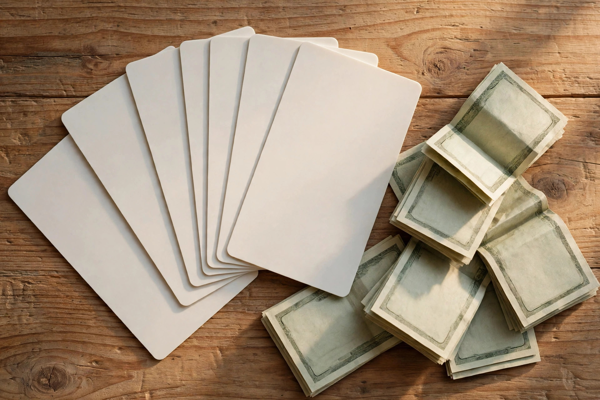

Gift cards vs. cash: which payout is worth more

Sooner or later every rewards balance reaches the same question: take the cash, or take the gift card? Most programs offer both, and the choice looks trivial — money is money. But the two options are not equal. Gift cards often come with a small bonus, cash spends absolutely anywhere, and each choice carries its own quiet costs: expiry dates, minimum amounts, and the risk of locking your balance into a store you stop visiting. The right answer depends on your habits, not on the program, and it changes from one payout to the next. This guide lays out the comparison so you can decide in about a minute, every time.
Why gift cards exist at all
Gift cards are not a favour to you; they are a deal between the rewards program and the retailer. When a program pays you in a store gift card, the retailer sells that card to the program at a discount — the program pays, say, $9 for a $10 card — because the card brings a customer into the store, and many card holders spend more than the card value once they are there. The program can then pass some of that saving to you as a bonus: 1,000 points might buy a $10 gift card but only $9 in cash. That is why gift cards often look like the better deal on paper. The retailer is paying for the visit, and part of that payment lands in your balance. Understanding this also explains why the best gift card bonuses cluster around big retailers with high margins, while cash stays flat: nobody discounts cash.
The math, in plain numbers
Take a typical balance of 1,000 points. As cash, the program might offer $10. As a gift card for a major retailer, the same 1,000 points might buy $11 or $12 of card value — a 10 to 20 percent uplift. That is a real difference, and over a year of steady earning it adds up. But the uplift only counts if you spend the whole card. A $12 card used for an $8 purchase, with $4 left sitting in an account you forget about, is worth less than the $10 cash would have been. The same goes for shipping: if the store charges delivery on small orders, part of the bonus evaporates at checkout. And if the card has an expiry date — some do, some do not, and the terms will say — an unused card is worth exactly zero. So the honest comparison is never $12 against $10. It is the value you will actually use against the $10 you can spend anywhere. Our guide to how cashback apps work explains where these payouts come from in the first place.
When gift cards win
- You already shop there every week — if the card covers groceries or fuel you were buying anyway, the bonus is pure gain and the card will be spent within days.
- The bonus is large — a 15 to 20 percent uplift beats cash by a clear margin, as long as you use the full value.
- You want a small treat with a boundary — a card for a coffee chain or a streaming service turns a scattered balance into one enjoyable purchase, instead of vanishing into everyday spending.
- Cash has a high minimum — some programs let you take a $5 gift card but demand $25 for a cash payout. If your balance is small, the card may be the only way to use it at all.
When cash wins
Cash wins whenever flexibility matters more than a small bonus. It spends at any store, it pays bills, it covers the exact amount of a purchase with nothing left over, and it never expires. Cash is also the right call when your balance is large: a 10 percent bonus on $10 is $1, but the same percentage on $100 is $10 locked into one retailer, and the risk of wasting part of it grows with the amount. Cash wins again when you are not sure where you will shop next month — a card for a store you stop visiting is a slow loss, while cash waits patiently in your account. And cash wins when the gift card option comes with conditions you have not read: minimum spends, excluded categories, or delivery charges that quietly eat the bonus. If you have to think hard about whether you will use the card, take the cash.
A simple way to decide
Use this rule and you will rarely go wrong: take the gift card only if you can name the exact purchase you will spend it on, in the next two weeks, at a store you already visit. If you can name it, the bonus is yours. If you cannot, take the cash and keep your options open. One more habit helps: check the value of your points before you redeem, because the exchange rate can change. Some programs run bonus redemption events where gift cards are worth extra for a limited time — our guide to when to redeem your points explains when waiting for one of those events pays off, and when it is just a reason to let a balance sit idle. Either way, the payout you actually use is always worth more than the bigger payout you never spend.
Payout choice matters as much as the earning: today’s checked picks are reviewed with the same honest comparison.
Browse today’s checked picksSponsored link. For adults 18+. Availability and rewards vary by provider, country and device — nothing is guaranteed, always read the terms.
Quick questions
Do gift cards from rewards programs expire?
Some do and some do not. Store gift cards often have long or no expiry, but promotional cards and some program-issued cards carry a deadline. Always check the expiry in the terms before you choose a card over cash.
Can I sell a gift card I do not want?
Resale sites exist, but they usually pay less than the card value, and some programs forbid transferring or selling their cards. If you think you might not use a card, take cash instead — it is the cleaner option.
Is cash always the safe choice?
Cash is the most flexible choice, but not always the best value. When a gift card carries a real bonus and you already shop at that store, the card is worth more. The safe choice is the one you will actually use in full.